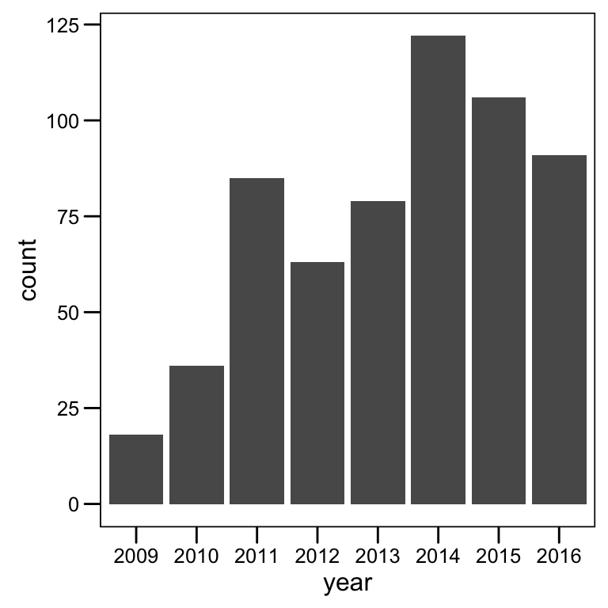

Here I show my publication record and the number of citations per year. Mostly I wanted to use the awesome scholar R package to programmatically extract and analyze Google Scholar profiles. If you are interested on the scholar package you can get more information here.
